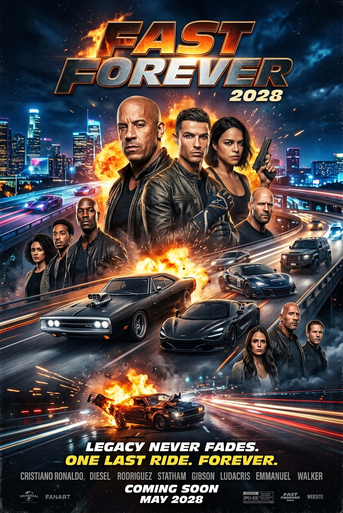

Few film series have lasted as long, spent as much, or stretched plausibility as far as Fast & Furious. Now Universal Pictures is preparing to bring it to a close. Fast Forever, the eleventh and final mainline entry, is scheduled to reach theaters worldwide on March 17, 2028, with Louis Leterrier attached to direct and Vin Diesel, as always, anchoring the cast as Dominic Toretto. This article discusses the ending of Fast X.
The title and release date were announced in January 2026. Since then, the picture has generated a steady stream of updates, some encouraging, some contradictory, and a few that raised more questions than they answered. What follows is a clear account of where the film stands: what has been confirmed, what has been promised, and what remains uncertain.
A franchise built on a simple promise
It is easy to forget how small this series once was. The original The Fast and the Furious arrived in 2001 as a lean story about illegal street racing, truck hijackings and an undercover cop in Los Angeles. Its heroes were mechanics and drivers, its stakes were personal, and its most memorable machine was Dom's 1970 Dodge Charger. The series grew steadily after that, adding the drift-racing detour of Tokyo Drift, the heist structure of Fast Five and, eventually, a globe-spanning spy-movie scale that no one could have predicted in 2001.
The commercial rewards have been enormous. Universal describes it as its longest-running and most profitable franchise, with a combined worldwide gross of roughly $7.3 billion. Furious 7, released in 2015 after the death of Paul Walker, stands as the high-water mark, and the farewell to Walker's Brian O'Conner remains one of the most affecting moments in the series. That history is why the finale carries such weight for its audience: it is the end of a story that, for many viewers, began when they were teenagers.
Why the finale is turning back the clock
Recent entries pushed spectacle to an extreme. F9 sent cars into orbit, and Fast X, which carried a reported budget of around $340 million, pitted the family against a villain armed with elaborate traps and a seemingly bottomless budget for destruction. The grosses did not keep pace with the costs, and the industry conversation around the series has increasingly turned to whether such spending can continue.
Diesel has said the answer is to go back to basics. According to the actor, the studio asked him to deliver a finale and he agreed on three conditions.
"The studio asked for the finale, and I said under three conditions: bring the franchise back to L.A., return to the car culture, and stick to authentic street racing."
Vin Diesel
Leterrier has echoed the sentiment, telling interviewers he has helped shape how the saga ends and has acknowledged that the franchise must adjust its budget to the realities of the modern box office. A story set on the streets of Los Angeles, built around practical driving and real cars, would be cheaper than another world tour and, perhaps more importantly, would speak to the fans who care most about the car-culture identity the series was founded on.

The screenplay and the man holding the wheel
The script is credited to Michael Lesslie, and by Diesel's account it has been through close to four years of development involving multiple writing teams. The actor has said that reading the finished draft moved him to tears and has called it the best screenplay he has read in decades, promising an emotional send-off for Dom.
Leterrier's situation is less tidy. He took over Fast X in the middle of production after original director Justin Lin departed, and he was named as returning for the finale. Yet in an interview with Polygon this year he said he had not yet read the latest script, adding only that there will be an ending and that it is a good one. Some foreign-language outlets read his remarks as a sign that he might not stay with the project, and he also mentioned that he was finishing another film. Universal has not announced any change, and at the time of this update Leterrier remains the attached director.
Where the production really stands
Anyone trying to follow the film's progress has had to separate genuine news from noise. In July, Diesel posted an Instagram video that appeared to show him on a set, thanking fans for waiting more than three years and ending with a line about getting back to filming. Fans took it as proof that cameras were rolling. TheWrap later reported that he had in fact been shooting a promotional spot for the World Cup, and that the finale was not in production at that point. Universal declined to comment on the matter.
A firmer date emerged at a Los Angeles screening marking the 25th anniversary of the original film, where Diesel told Variety that shooting begins in December. If that holds, the schedule would give the production roughly a year and a quarter to shoot, finish effects and prepare for the March 2028 opening, a tight but workable window for a film of this type. Filming locations have not been officially confirmed, though the pledge to center the story on Los Angeles has been repeated by both Diesel and Leterrier.
A cameo built for the global game
One of the more eye-catching pieces of casting news came from Diesel himself, who confirmed that international football star Cristiano Ronaldo will appear in Fast Forever. The actor said the production wrote a custom role for the athlete.
The decision fits the franchise's long habit of folding global celebrity into its universe, and it dovetails with the pivot back to sports cars and international racing culture. Ronaldo is one of the most recognizable people on the planet, and his presence gives the studio an easy marketing hook in markets where football dominates the conversation.
View this post on Instagram
The unfinished business left by Fast X
Fast X was conceived as the first half of a two-part ending, and it closed on a string of cliffhangers that the finale is expected to resolve. The villain, Dante Reyes, played by Jason Momoa, is the vengeful son of Hernan Reyes, the Brazilian drug lord whose fortune Dom and his crew stole in Fast Five. Dante has spent the film dismantling the family piece by piece, and the loose ends he left behind are numerous.
- Dom and Little Brian: They are cornered at a Portuguese dam rigged with explosives by Dante, and the opening of the new film is expected to settle that trap.
- Tej, Roman, Ramsey and Han: Their plane was shot down over the mountains by Aimes, played by Alan Ritchson, so their survival and rescue should drive the first act.
- Letty and Cipher: They escaped an Antarctic black site aboard a nuclear submarine and formed an uneasy alliance to hunt Dante.
- Gisele Yashar: Gal Gadot's character was revealed to be alive and at the controls of that submarine, which raises questions about how she survived and sets up a reunion with Han.
- Luke Hobbs: Dwayne Johnson's character received a direct threat from Dante in a mid-credits scene, signaling a return to the mainline story to settle personal scores.
The scheduling of so large an ensemble has been a quiet obstacle. Ritchson has said that coordinating busy cast calendars contributed to the delays, and he has also spoken of the financial hurdles involved in mounting a film at this scale. Whether Johnson and Gadot appear is a question the studio has not publicly answered, although the cliffhangers strongly point that way.
Production timeline at a glance
- January 2026: Title and March 2028 release date announced
- Mid-2026: Script completed, written by Michael Lesslie
- December 2026: Principal photography expected to begin, according to Diesel
- Early 2028: Peacock series expected to arrive
- March 17, 2028: Global theatrical release
Life after the last lap
Ending the mainline story does not mean ending the brand. Universal has already shown how it intends to keep the engine running. Hobbs & Shaw, released in 2019, proved that characters could carry their own films, and Peacock has moved ahead with live-action television set in the same world. The first series is being developed by Mike Daniels, who worked on Sons of Anarchy, and Wolfe Coleman, with Diesel executive producing, and it is intended to explore legacy characters and secondary storylines while the films wrap up. Some reports say several Fast & Furious series are in development for the streamer, though details on the others remain thin.
That approach carries a clear logic. Television allows a franchise to keep fans engaged between releases, deepen supporting characters and test new faces, all at a lower cost per hour than a blockbuster. It also lets the studio claim a definitive ending for Dom while leaving the wider universe open for more stories.
What to watch for next
The next few months will matter more than the last few years of speculation. The key markers are easy to name: whether cameras actually roll in December, whether Leterrier is confirmed in the director's chair, how the budget is framed, and which of the Fast X survivors sign on for the finale. Each milestone will either strengthen confidence in the March 2028 date or add to the doubts that have followed the project.
For now, what exists is a title, a date, a star who is publicly all-in, a script that its lead calls the best in decades, and a promise to return to the streets where it all began. After more than two decades and billions of dollars, that may be enough to keep the audience waiting at the starting line.